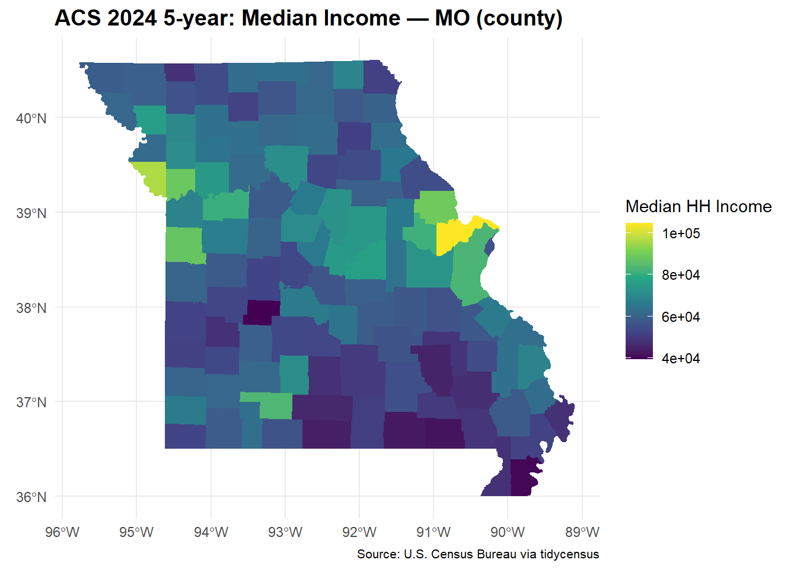

library(tidycensus)
library(tigris)
library(sf)
library(dplyr)
library(ggplot2)
library(readr)
library(tidyr)
options(tigris_use_cache = TRUE)census_download_scripts
Download data from Census Bureau
Setup
1 API KEY
Run this only once IN THE CONSOLE DO NOT ADD API KEY TO THE SCRIPT
census_api_key("YOUR API KEY HERE", install = TRUE, overwrite = TRUE)
ATTENTION! API KEYS expires quickly. Request a new one whenever needed.
2 Explore variables
Download a complete list of codes and descriptions available for the 2024 ACS 5-year (“acs5”) and stores it in a table called vars. It is like a data dictionary
The Census Bureau has thousands of variables in the ACS, and each one is identified by a cryptic code like B19013_001 or B17001_002 — nobody memorizes these. load_variables() downloads the full catalog of available variable codes and their human-readable descriptions (like a dictionary or index) and stores it in vars.
This step doesn’t download any actual data about counties, states, income, or poverty numbers. It’s purely a reference table you browse through (you filtered it with grepl(“^B19”, name)) to figure out which exact codes correspond to the concepts you want to study — in your case, median household income and poverty. You use this step once, just to look things up, then you already know the codes you need (B19013_001, B17001_002, B17001_001), which get hardcoded into my_vars in the next part of the script.
vars <- load_variables(2023, "acs5")Keeps only the rows where the variable name starts with “B19”.
greplis a text/pattern search (regex), and\^B19means “starts with B19”.
Variables starting with B19 are all income-related, so this filters the giant dictionary down to just the income variables.
slice_headcan also capture the top n rows of each group withgroup_by()
vars <- dplyr::filter(vars, grepl("^B19", name)) %>%
dplyr::slice_head(n = 10)
print(vars)# A tibble: 10 × 4
name label concept geography
<chr> <chr> <chr> <chr>
1 B19001A_001 Estimate!!Total: Household Income … tract
2 B19001A_002 Estimate!!Total:!!Less than $10,000 Household Income … tract
3 B19001A_003 Estimate!!Total:!!$10,000 to $14,999 Household Income … tract
4 B19001A_004 Estimate!!Total:!!$15,000 to $19,999 Household Income … tract
5 B19001A_005 Estimate!!Total:!!$20,000 to $24,999 Household Income … tract
6 B19001A_006 Estimate!!Total:!!$25,000 to $29,999 Household Income … tract
7 B19001A_007 Estimate!!Total:!!$30,000 to $34,999 Household Income … tract
8 B19001A_008 Estimate!!Total:!!$35,000 to $39,999 Household Income … tract
9 B19001A_009 Estimate!!Total:!!$40,000 to $44,999 Household Income … tract
10 B19001A_010 Estimate!!Total:!!$45,000 to $49,999 Household Income … tract 3 Parameters
Now that you know exactly which variable codes you want, get_acs() is the function that actually contacts the Census API and pulls the real numbers for those specific codes, for the specific geography you chose (here, counties in Missouri). This is the step that returns actual estimates and margins of error for real places, plus (because geometry = TRUE) the map boundaries for each county.
But before, let’s set up the paramers for our search.
survey <- "acs5"
year_acs <- 2024
state_abbr <- "MO"
geo_level <- "county"
my_vars <- c(
income = "B19013_001", # median household income
pov = "B17001_002", # people below poverty
povden = "B17001_001" # poverty universe = denominator
)4 Download the data
Let’s now download the data
acs_wide <- get_acs(
geography = geo_level,
variables = my_vars,
state = state_abbr,
year = year_acs,
survey = survey,
geometry = TRUE,
# 'wide' for variables in columns 'long' is default for variables in rows
output = "wide"
)In R, an object can be more than one thing at the same time:
data.framemeans it’s a tablesfmeans it’s also a spatial object (simple features) because it has a special column storing the geometryThat extra layer is what lets you use
geom_sf()inggplot()to draw maps
class(acs_wide)[1] "sf" "data.frame"5 Derive a rate, and carry its margin of error through
The chunk below calculates the poverty rate for each county: it takes the estimated number of people below the poverty line (povE, from B17001_002) and divides it by the total population in the “poverty universe” for that county (povdenE, from B17001_001 — the denominator, i.e., the population this poverty measure applies to). The result is a proportion (for example, 0.15 = 15% of people in that county are below the poverty line).
When you simply divide two numbers that each already have their own margins of error (povM and povdenM), you can’t just divide the margins of error too (povM / povdenM would be wrong). Because povE (people in poverty) is a subset of povdenE (everyone), the two estimates are statistically correlated, and there’s a specific Census Bureau formula for correctly calculating the margin of error of a proportion derived from two other estimates.
moe_prop() is a function from the tidycensus package itself that already implements that official Census formula for you. It takes: - povE — numerator estimate (people in poverty) - povdenE — denominator estimate (total population) - povM — numerator’s MOE - povdenM — denominator’s MOE
And returns the correct MOE for the pov_rate you just calculated.
In practice: without this line, you’d have each county’s poverty rate but no idea how reliable that number is. With pov_moe, you can say, for example, “this county’s poverty rate is 15% ± 3 percentage points” — which is essential for the part of the assignment that asks you to compare areas and check whether their confidence intervals overlap (the “Uncertainty check” deliverable).
acs_wide <- acs_wide %>%
mutate(
pov_rate = povE / povdenE,
pov_moe = moe_prop(povE, povdenE, povM, povdenM)
)6 Map (edit titles/theme)
ggplot(acs_wide) +
geom_sf(aes(fill = incomeE), color = NA) +
scale_fill_viridis_c(name = "Median HH Income") +
labs(title = paste0("ACS ",
year_acs,
" 5-year: Median Income — ",
state_abbr,
" (",
geo_level,
")"
),
caption = "Source: U.S. Census Bureau via tidycensus") +
theme_minimal() +
theme(#text = element_text(family = "Palatino"),
plot.title = element_text(size = 14, face = "bold"),
plot.caption = element_text(size = 8),
legend.position.inside = c(0.2, 0.15)
)
7 Table (top/bottom by poverty rate, with MOE)
top10 <- acs_wide %>%
st_drop_geometry() %>%
arrange(desc(pov_rate)) %>%
select(NAME, pov_rate, pov_moe, povE, povM) %>%
slice_head(n = 10)
bottom10 <- acs_wide %>%
st_drop_geometry() %>%
arrange(pov_rate) %>%
select(NAME, pov_rate, pov_moe, povE, povM) %>%
slice_head(n = 10)
top10 NAME pov_rate pov_moe povE povM
1 Pemiscot County, Missouri 0.2960201 0.03654440 4366 539
2 Wayne County, Missouri 0.2571777 0.06126130 2741 653
3 Ripley County, Missouri 0.2478746 0.04712319 2624 499
4 Oregon County, Missouri 0.2359243 0.04631827 1982 390
5 Dunklin County, Missouri 0.2202533 0.02081253 5879 556
6 Adair County, Missouri 0.2200734 0.02351721 5155 551
7 Ozark County, Missouri 0.2147483 0.04930818 1890 434
8 Carter County, Missouri 0.2077304 0.05540543 1091 291
9 St. Louis city, Missouri 0.2063994 0.01046293 57765 2929
10 Worth County, Missouri 0.2055878 0.05902627 390 112bottom10 NAME pov_rate pov_moe povE povM
1 St. Charles County, Missouri 0.05202451 0.004363680 21208 1779
2 Andrew County, Missouri 0.06194740 0.015143549 1100 269
3 Cass County, Missouri 0.06244626 0.008771386 6827 959
4 Platte County, Missouri 0.07023277 0.009500749 7673 1038
5 Scotland County, Missouri 0.07310705 0.032412611 336 149
6 Warren County, Missouri 0.08014716 0.014984837 2941 550
7 Ste. Genevieve County, Missouri 0.08150609 0.019433453 1472 351
8 Franklin County, Missouri 0.08164945 0.008934481 8534 934
9 Christian County, Missouri 0.08174038 0.015259305 7526 1405
10 Clay County, Missouri 0.08466893 0.008846428 21591 22568 Save outputs
write_csv(st_drop_geometry(acs_wide), paste0("acs_", state_abbr, "_", year_acs, ".csv"))